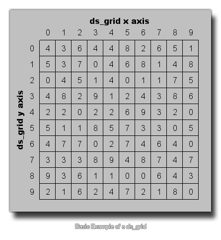

A ds_grid is basically a type of two-dimensional array. You define the grid by setting its integer width and height, which then
sets the total number of "cells" within the grid (the width and height multiplied) and these cells are then used to hold different data values (real numbers or strings).

This type of structure allows you to set and retrieve the value of cells in the grid by giving the x and y index of it (which starts with 0 for both the x and the y axis and goes up to the width - 1 and the height -1).
But you can also set the value in specific grid regions, add single values, and retrieve the sum, maximum, minimum, and mean value over a given region, making this data structure the most versatile of all those
available to you.
NOTE : As with all dynamic resources, data structures take up memory and so should always be destroyed when no longer needed to prevent memory leaks which will
slow down and eventually crash your game.
The following functions exist that deal with DS grids.
- ds_grid_create
- ds_grid_destroy
- ds_grid_width
- ds_grid_height
- ds_grid_resize
- ds_grid_clear
- ds_grid_set
- ds_grid_set_disk
- ds_grid_set_grid_region
- ds_grid_set_region
- ds_grid_shuffle
- ds_grid_sort
- ds_grid_get
- ds_grid_get_max
- ds_grid_get_mean
- ds_grid_get_min
- ds_grid_get_sum
- ds_grid_get_disk_max
- ds_grid_get_disk_mean
- ds_grid_get_disk_min
- ds_grid_get_disk_sum
- ds_grid_add
- ds_grid_add_region
- ds_grid_add_disk
- ds_grid_add_grid_region
- ds_grid_multiply
- ds_grid_multiply_disk
- ds_grid_multiply_region
- ds_grid_multiply_grid_region
- ds_grid_value_exists
- ds_grid_value_disk_exists
- ds_grid_value_x
- ds_grid_value_y
- ds_grid_value_disk_x
- ds_grid_value_disk_y
- ds_grid_copy
- ds_grid_read
- ds_grid_write